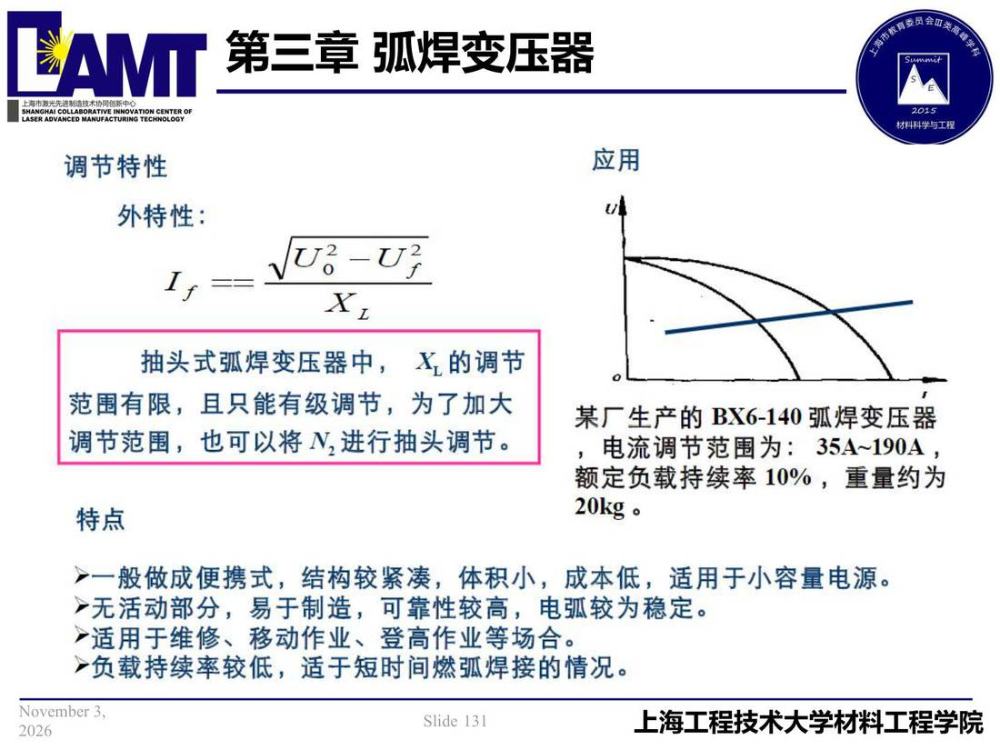

03 第3章 弧焊变压器/p131 调节特性
p131 调节特性
📄 原文：📄 弧焊电源 课件（PDF 第 131 页）（幻灯片 131/273；PDF 第 131 页）
调节特性

讲义原文
本页在课件中是纯图文版式（无文字层），内容以页图与下面的 OCR 文本为准。
页面文字（OCR 机读，可能有错字，以页图为准）
调节特性 外特性： 应用 抽头式弧焊变压器中，X_的调节 范围有限，且只能有级调节，为了加大 调节范围，也可以将N进行抽头调节。 特点 某厂生产的 BX6-140 弧焊变压器 ，电流调节范围为：354~190A， 额定负载持续率10%，重量约为 ▶一般做成便携式，结构较紧凑，体积小，成本低，适用于小容量电源。
无活动部分，易于制造，可靠性较高，电弧较为稳定。 ▶适用于维修、移动作业、登高作业等场合。 ▶负载持续率较低，适于短时间燃弧焊接的情况。